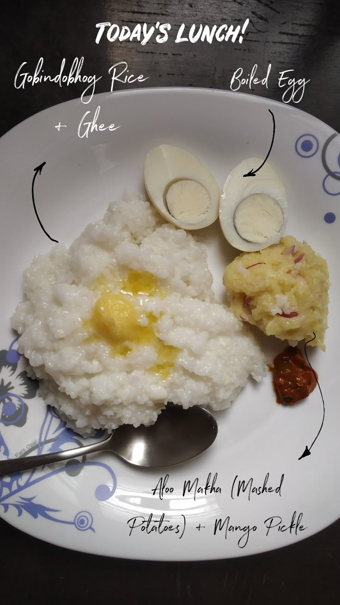

Sheddho Bhaat

Description
Sheddho Bhaat is a traditional Bengali dish consisting of simple,
plain boiled rice served with a variety of side dishes, typically
including lentils (dal), vegetables, and fish. It's a staple comfort
food in Bengali households, often eaten during days of fasting, illness,
or when a light, easy meal is needed. The rice is usually accompanied by
a modest, flavorful dal, vegetables like aloo (potatoes) or begun (eggplant),
and sometimes a fish like hilsa or mackerel. Sheddho Bhaat reflects
the minimalist, soothing aspect of Bengali cuisine, highlighting the
natural flavors of the ingredients without overpowering them with heavy spices.
Ingredients
- Basmati rice or any regular white rice (1 cup)
- Potatoes (1-2, peeled and cut into pieces) or Eggplant
(Begun)(1 medium-sized, cut into pieces)
- Mustard oil (for cooking)
- Turmeric powder (1/2 tsp)
- Salt (to taste)
- Green chilies (optional)
- Fresh coriander leaves (for garnish, optional)
- Ghee (optional, for added richness, 1 tsp for serving)
- Ginger paste (optional, 1/2 tsp)
Steps
- Cooking the Rice (Bhaat)
- Rinse the rice thoroughly in water to remove excess starch
- Boil water in a pot (about 2 cups of water for 1 cup of rice)
- Add a pinch of salt (optional) to the boiling water, and then add the rinsed rice
- Cook the rice on medium heat until it becomes soft and the water is absorbed
- Once cooked, fluff the rice gently with a fork and set it aside. You can drizzle a
little ghee on top if you prefer a richer flavor
- Cooking the Vegetable Side (Aloo or Begun)
- For Potatoes (Aloo): Heat mustard oil in a frying pan. Add chopped potatoes and fry
until golden and soft. Sprinkle a little turmeric powder and salt to taste.
Optionally, add green chilies for extra flavor.
- For Eggplant (Begun): Heat mustard oil in a pan and fry the chopped eggplant pieces until
they soften and turn golden. Add a pinch of turmeric powder and salt for seasoning.
- Cook the vegetables until they are tender and well-coated with spices. Set aside.
- Serving the Sheddho Bhaat
- On a plate, serve a portion of the boiled rice (Sheddho Bhaat).
- Place the vegetable side (aloo or begun) next to the rice.
- Garnish with fresh coriander leaves and, if desired, drizzle a teaspoon of ghee over the rice for extra richness.
Back to Home Page